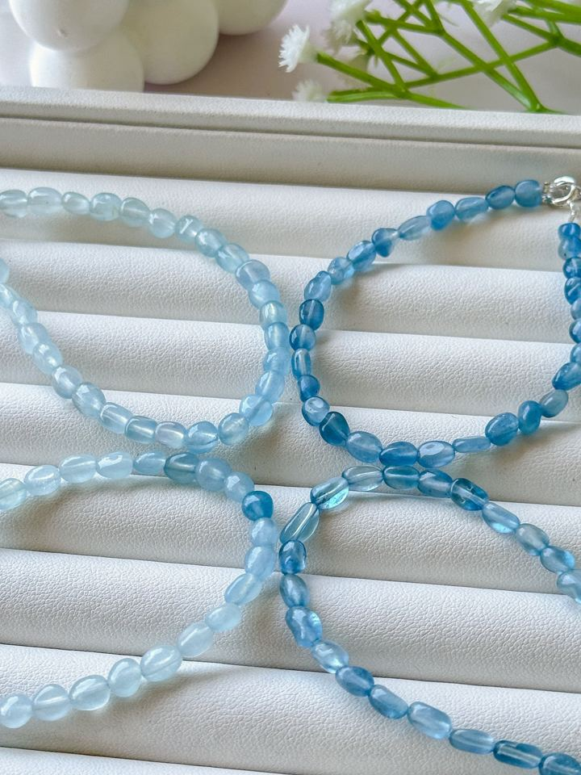

BEGINNER GUIDE
先確認礦石、配件與線材，再決定怎麼清潔。不同材質與處理方式，保養條件也不同；以下是日常照顧的起點，個別商品說明優先。

手串能否碰水，要看礦石、配件、線材及已知處理方式。材質不確定時，先避免浸泡；洗澡、游泳、泡溫泉前取下。不小心沾水先用柔軟乾布輕拭，後續清潔方式再依材質確認。
選購與保養時，一起留意這兩部分：
擦完香水、乳液、防曬後，等乾了再戴。這些東西沾在珠子上會讓光澤變暗，也會讓彈力線變脆。
部分有顏色的礦石，像紫水晶、粉晶等，長時間放在強烈陽光下，顏色可能會慢慢變淡。平常戴出門沒問題，只是不要把它放在窗邊整天曝曬。
不戴的時候，每條分開放在小袋子或有隔層的盒子裡。不同礦石的硬度不一樣，放在一起互相摩擦，比較軟的那條容易被刮花。也盡量不要掛著或拉長存放，彈力線會被撐鬆。
平常配戴、收納時，順便看一眼線材，不需要刻意拉扯測試：
出現這些情況就該換線了，不要等到斷掉，珠子散落很容易弄丟。檢查與更換頻率依配戴、拉扯與接觸水分的情況調整，不把固定時間當成安全保證。
戴的時候用手指撐開手掌慢慢套進去，不要用力拉扯手串。拿下來時也一樣，從手掌最寬的地方慢慢滑出來，線會比較耐用。